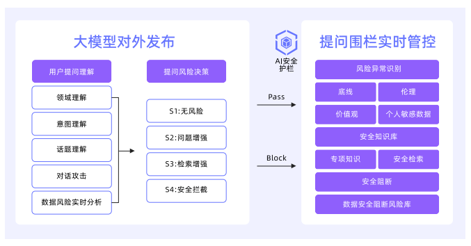

【AI白皮书】AI安全¶

10.1 AI安全风险的来源和分类¶
系统风险：AI模型软件的供应链风险、暴露面风险以及算力劫持风险。
网络风险：面向公网的入侵攻击，以及内网的隔离风险。
身份风险：对非人类身份的管控，越权访问，身份冒充等。
数据风险：Agent模型训练时的数据投毒，以及输入/输出阶段的敏感信息泄露等。
模型风险：Agent模型输入输出内容的恶意诱导、提示词攻击等风险。
应用风险：当AI在线上提供服务时，会面临Web入侵、DDoS攻击导致服务不可用等风险。
10.2 保护应用安全¶
10.2.1 背景和挑战¶
攻击者不再需要直接寻找暴露在公网服务中的漏洞，他们只需操纵相关的AI Agent，就能让这些AI Agent代为攻击内外部的弱电服务。
服务器端请求伪造（SSRF）是引入AI Agent后最突出的威胁。攻击者仅需通过自然语言提示，即可诱导受信任的Agent向内部网络发起恶意请求，窃取云环境凭证或扫描内网资产。Agent也可能被攻击者诱导产生包含SQL注入或XSS等恶意载荷，攻击与之交互的后端服务。
10.3.2 新的攻击面¶
构造恶意的语言诱导，让AI Agent变为一个无节制的资源消耗工具，使其无法正常为其他用户提供服务。构造复杂度炸弹式的指令，诱使AI Agent陷入生成海量文本的陷阱，生成数万乃至数十万的Token，导致其自身的计算成本飙升。
攻击者也可以攻击AI Agent调用的外部API，高频或海量触发复杂或昂贵的API调用。攻击者还能将恶意指令隐藏在AI Agent将要处理的网页、表格、PDF等外部数据中，当AI Agent处理这些被污染的数据时，隐藏的指令就会被执行。
10.3.3 防护思路¶
沿用并强化传统的应用安全最佳实践，同时实施严格的资源治理策略，针对工作流劫持类攻击，则需要设计更加完善的上下文隔离机制。
10.3.4 解决建议¶
一方面，对在AI场景下输入输出做安全检测的AI安全护栏方案，以及相关AI应用开发平台和网关对AI安全护栏的集成。另一方面，由于AI Agent进一步打破了传统的攻击面和网络边界，要更加关注纵深防御、动态检测、运行时安全等多种安全措施的组合。
例如当AI Agent未经过WAF或防火墙直接在内网发起恶意请求时，可以通过RASP等运行时检测方案或VPC防火墙来做防护，当AI Agent在用各种方式泄露敏感数据时，可以通过API安全、NDR等流量安全方案，从敏感数据流转的角度去及时发现风险。
10.3 保护模型安全¶
10.3.1 背景与挑战¶
输入层威胁：包括对抗样本攻击（如通过微调图像/音频诱导多模态Agent误判）、提示词注入的变种攻击（如上下文分割攻击、语义混淆攻击），以及通过恶意文件（如PDF隐写术）触发供应链漏洞。
推理层威胁：涵盖模型越狱导致的伦理失控、RAG知识库的定向爬取引发的数据资产泄露，以及函数调用劫持（如篡改API参数执行未授权操作）。
输出层威胁：设计生成式钓鱼内容（如伪造银行通知）、模型幻觉在医疗/金融场景的致命误导，以及通过隐写术在AIGC内容中植入隐蔽指令。
10.3.3 模型安全的未来¶
自定义检测Agent可满足不同行业客户的特定业务风险识别需求。它引入了专用算法模型，并支持多行业多场景灵活配置，从而实现从通用到专属的安全检测能力升级。
10.4 保护数据安全¶
10.4.3 构建全数据全生命周期的安全保障¶
1、数据收集
（1）数据来源：用户上传类数据、模型文件和推理数据、运行日志类数据。
（2）数据分类：以阿里云数据安全中心为例，从数据价值、敏感性、数据合规和业务需求等多角度将数据分为4个安全级别：S1、S2、S3、S4。
（3）数据脱敏
（4）数据去毒：对自有的存储资源中多种违规内容（例如涉黄、涉政、暴力、违法等）进行实时监控、检测和拦截。
2、数据传输
（1）面向数据传输提供私有网络加密
（2）提示词推理加密
（3）应用协议加密
3、数据存储
（1）存储隔离
（2）存储加密
4、数据访问
5、数据处理

6、数据删除
10.5 保护身份安全¶
10.5.1 背景和挑战¶
AI身份的管理不同于当前人类身份管理，AI Agent行为链复杂不可测，动态权限需求使得传统的静态权限模型难以适用，黑客可通过窃取API密钥、访问令牌等敏感凭据，可轻易绕过传统安全防护，实施数据窃取、资源劫持等恶意行为。
10.6 保护系统和网络安全¶
10.6.1 背景和挑战¶
任何基础设施层面的疏漏都可能引发模型盗用、数据泄露或服务滥用等严重风险。
10.6.4 网络隔离与访问控制¶
1、互联网边界防护：智能访问控制、主动威胁防御、全链路可视化。
2、内网微隔离防护：阻断攻击横向渗透路径，零信任网络实践。
通过安全组实现节点级防护（点），VPC边界防火墙拦截跨区流量威胁（线），互联网防火墙把控公网入口（面），形成覆盖全网络层级的防护网络。
个人学习总结¶
《AI白皮书》是阿里出的，内容除了AI通识，更多是阿里相关产品的推广。共10章，学习过程漫长且枯燥。通过全篇学习，可以建立新的认知，AI是一整个生态系统，就像现在的软件生态一样。从研发到商业，从调优到评估，从监控到安全，AI改变着工作和生活的方式，我们正在经历一个全新的时代。